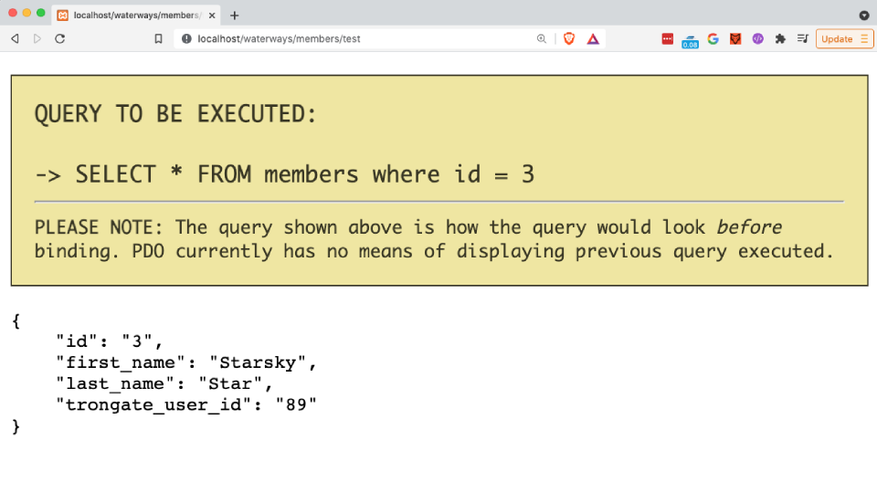

The 'Get Where' method is for fetching a single record from a database table. It accepts the following parameters:
WHEN A MATCHING RECORD IS FOUND
When matching record is found, a PHP object will be returned where each object property key represents a column from the target database table, and each object property value represents a value that is assigned to the object key.
WHEN A MATCHING RECORD IS NOT FOUND
If the query fails to find any matching records then the boolean value of false is returned.
The syntax below shows the simplest Get Where example possible. In this example, we pass a record 'id' as an argument and the Model will query the table whose name matches the first segment from the URL.
$result = $this->model->get_where(3);
The code above will produce the following SQL query:
SELECT * FROM tablename where id = 3
Below is an example of a Members.php controller file that contains a test() method. Here we're invoking a basic 'Get Where' command and then immediately displaying the results using Trongate's json() method:
<?php
class Members extends Trongate {
function test() {
$result = $this->model->get_where(3);
json($result);
}
Below shows an example of the kind of output that we can expect to see from the above method, when Debug Mode is switched on:

Below is a more advanced example:
$result = $this->model->get_where(88, "fish");
The code above would produce the following SQL query:
SELECT * FROM fish where id = 88